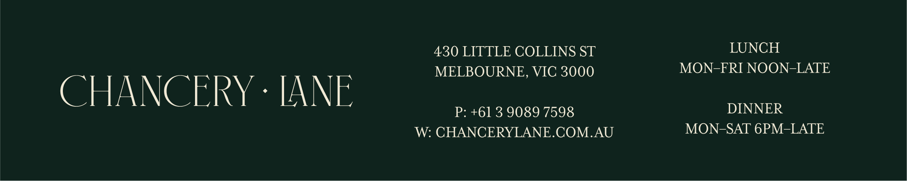
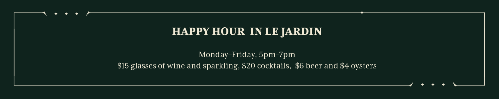

|
First Name Surname Job Title +61 4XX XXX XXX   Every meal we share here is shared on Wurundjeri Woi Wurung Country. Chancery Lane acknowledges the Traditional Owners of this land, the place where we gather, eat and earn our living. We pay respect to Elders past and present and extend that respect to all Aboriginal and Torres Strait Islander peoples. |